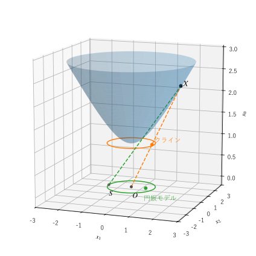
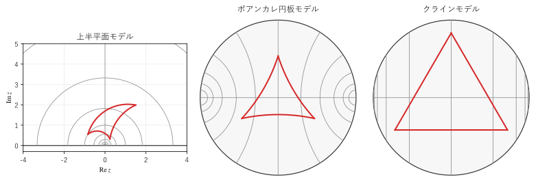

第 3 章 双曲平面のモデル
第 2 章で見たように、双曲平面の全体を 3 次元空間の中の曲面として描くことはできない。そこで、平面の一部などを使い、長さの測り方を変えて双曲平面を表す。これを双曲平面のモデルという。この章では、代表的な 4 つのモデルを紹介し、それらの間の対応を示す。
モデルの考え方
モデルは、次の 3 つを指定して作る。
点の集合：双曲平面の点を、どの集合の要素で表すか。
計量：曲線の長さをどう測るか。微小な線分の長さ \(ds\) を、座標の微小な変化で表した式で与える。
測地線：計量で測って最短となる曲線（ユークリッド幾何学の直線にあたる）が、モデルの上でどんな形になるか。
地図にたとえると分かりやすい。世界地図にはメルカトル図法、正距方位図法などがあり、どれも同じ地球を表すが、見た目は大きく違う。地図の上の 1 cm が実際に何 km にあたるかは、地図の場所によって変わる。双曲平面のモデルも同じで、どのモデルも同じ双曲平面を表しており、モデルの上の見た目の長さと、双曲平面での本当の長さは一致しない。
本書では、モデルの上でユークリッド幾何学の意味で測った長さを「ユークリッドの長さ」、計量で測った長さを「双曲的な長さ」と呼んで区別する。
上半平面モデル
複素平面の上半分
を点の集合とし、計量を
とするものを上半平面モデルという。ユークリッドの長さを、その場所の高さ \(y\) で割ったものが双曲的な長さである。実軸に近い（\(y\) が小さい）ところほど、同じユークリッドの長さでも双曲的には長い。実軸 \(y = 0\) は無限に遠く、双曲平面には含まれない。
上半平面モデルの測地線は、次の 2 種類である（図 4の左）。
実軸に垂直な半直線 \(\{ x = c, \ y > 0 \}\)
中心が実軸上にある半円
どちらも実軸と直角に交わる。実軸上の点と無限遠の点 \(\infty\) は双曲平面の点ではないが、測地線の「行き着く先」として重要であり、無限遠点（理想点）と呼ぶ。上半平面モデルの無限遠点の全体は、実軸に \(\infty\) を加えたものである。
計量 (1) は、ユークリッドの計量 \(|dz|\) に、場所ごとの正の数 \(1/y\) を掛けた形をしている。このような計量では、2 本の曲線が交わる角度は、ユークリッドの意味の角度と双曲的な角度が一致する。つまり、モデルの図の上で分度器で測った角度が、そのまま双曲平面での角度になる。このようなモデルを等角なモデルという。
ポアンカレ円板モデル
単位円板
を点の集合とし、計量を
とするものをポアンカレ円板モデル（以下、円板モデル）という。中心付近ではユークリッドの長さのおよそ 2 倍が双曲的な長さであり、境界の単位円に近づくほど、同じユークリッドの長さが双曲的には長くなる。単位円は無限に遠く、円周上の点が無限遠点である。
円板モデルの測地線は、次の 2 種類である（図 4の中央）。
円板の直径
単位円と直角に交わる円の、円板の内側にある弧
円板モデルも、計量がユークリッドの計量の正の数倍なので、等角である。エッシャーの版画「円の極限」の魚や天使と悪魔が、境界に近づくほど小さく描かれているのは、円板モデルで同じ大きさの図形を描いたためである（第 8 章）。
上半平面モデルと円板モデルは、ケーリー変換
で互いに移り合う。この変換は、上半平面の点 \(i\) を円板の中心 \(0\) に、実軸を単位円に、\(\infty\) を \(1\) に移し、計量 (1) を計量 (2) に移す。したがって、2 つのモデルは同じ双曲平面の異なる「地図」である。
双曲面モデル
3 次元の座標 \(x = (x_0, x_1, x_2)\) に対して、ミンコフスキーの双線形形式
を考える。普通の内積と違い、第 1 成分の積だけ符号が逆である。点の集合を、2 葉双曲面の上半分
とするものを双曲面モデル（ミンコフスキーモデル、ローレンツモデルとも呼ぶ）という。計量は、\(ds^2 = -dx_0^2 + dx_1^2 + dx_2^2\) をこの面に制限したもので与える（双曲面の上では、この量は正になる）。
双曲面モデルの測地線は、原点を通る平面と双曲面の交わり（双曲線の片方の枝）である。2 点の距離は、後の第 4 章で示すように
という簡単な式で求まる。
これは球面の幾何学との類似で理解できる。単位球面 \(x_0^2 + x_1^2 + x_2^2 = 1\) の上の 2 点の距離（大円に沿った距離、つまり中心角）は \(\cos d = x \cdot y\) で求まり、測地線（大円）は原点を通る平面と球面の交わりである。双曲面モデルは、内積をミンコフスキーの双線形形式に、\(\cos\) を \(\cosh\) に置き換えたものである。第 2 章で「双曲平面は半径が虚数の球面とみなせる」と述べたのは、この意味である。
双曲面モデルは、3 次元の線形代数で計算できるので、数値計算や機械学習で好んで使われる（第 10 章）。また、特殊相対論の 4 元速度の空間がこのモデルそのものであることも重要である（第 9 章）。
クラインモデル
単位円板を点の集合とし、測地線を円板の弦（線分）とするモデルをクラインモデル（ベルトラミ・クラインモデル、射影モデルとも呼ぶ）という（図 4の右）。測地線がまっすぐなので、「直線の外の 1 点を通り、その直線と交わらない直線が無数にある」ことが一目で分かる。円板の中の 1 本の弦に対し、外の点を通って弦と交わらない弦は、いくらでも引けるからである。
2 点 \(k\)、\(m\) の距離は、ベクトルとみたときの内積 \(k \cdot m\) を使って
で求まる。
一方、クラインモデルは等角ではない。円板の中心以外では、図の上の角度と双曲的な角度が一致しない。このため、角度が重要な作図には円板モデル、直線性が重要な計算（たとえば 2 本の測地線の交点を求める）にはクラインモデル、と使い分ける。
モデル間の対応
4 つのモデルの関係を図 3に示す。双曲面モデルを中心に考えると、ほかの 2 つの円板のモデルは、双曲面を平面に射影して得られる。
円板モデル：双曲面上の点 \(X\) と点 \(S = (-1, 0, 0)\) を結ぶ直線が、平面 \(x_0 = 0\) と交わる点（立体射影）
クラインモデル：双曲面上の点 \(X\) と原点 \(O\) を結ぶ直線が、平面 \(x_0 = 1\) と交わる点（中心射影）


図 3 双曲面モデルから円板モデル（緑）とクラインモデル（橙）への射影
サンプルの全体：ch03_hyperboloid.py
これらの射影とケーリー変換を式で書くと、表 5のようになる。上半平面モデルの点を \(h\)、円板モデルの点を \(z\)、クラインモデルの点を \(k\) （いずれも複素数）、双曲面モデルの点を \(x = (x_0, x_1, x_2)\) とする。
変換 |
式 |
|---|---|
上半平面 → 円板 |
\(z = (h - i) / (h + i)\) |
円板 → 上半平面 |
\(h = i (1 + z) / (1 - z)\) |
双曲面 → 円板 |
\(z = (x_1 + i x_2) / (1 + x_0)\) |
円板 → 双曲面 |
\(x = \left( \dfrac{1 + |z|^2}{1 - |z|^2}, \ \dfrac{2 \Re z}{1 - |z|^2}, \ \dfrac{2 \Im z}{1 - |z|^2} \right)\) |
双曲面 → クライン |
\(k = (x_1 + i x_2) / x_0\) |
円板 → クライン |
\(k = 2 z / (1 + |z|^2)\) |
クライン → 円板 |
\(z = k / \left( 1 + \sqrt{1 - |k|^2} \right)\) |
同じ図形を 3 つのモデルで描いたものが図 4である。赤い線は、中心から距離 1.2 の 3 点を頂点とする正三角形、灰色の線は、水平な測地線とそれに垂直な測地線の網目である。上半平面モデルの図は、円板モデルの図をケーリー変換の逆で移したもので、円板の中心が点 \(i\) に、右端の無限遠点 \(1\) が上方の無限遠 \(\infty\) に対応する。


図 4 同じ図形を、上半平面モデル、円板モデル、クラインモデルで描いたもの
サンプルの全体：ch03_models.py
図から次のことが読み取れる。
上半平面モデルと円板モデルでは、測地線が円弧になり、網目の測地線どうしは直角に交わって見える（等角だから）。
クラインモデルでは、測地線がすべて線分になる。一方、網目の交わる角度は直角に見えない（等角ではないから）。
どのモデルでも、三角形の辺は 3 本の測地線分であり、同じ三角形を表している。
4 つのモデルの特徴をまとめる。
モデル |
測地線の形 |
角度 |
主な用途 |
|---|---|---|---|
上半平面 |
実軸に垂直な半直線、実軸に中心を持つ半円 |
正しい（等角） |
等長変換を行列で扱う計算（第 5 章） |
円板 |
直径、境界に直交する円弧 |
正しい（等角） |
全体を見渡す作図、タイリング、可視化 |
双曲面 |
原点を通る平面との交わり |
図の見た目とは異なる（ミンコフスキーの双線形形式で測る） |
数値計算、機械学習、相対論 |
クライン |
弦（線分） |
中心以外では正しくない |
交点の計算、直線性を使う議論 |
数値で確かめる
上半平面の 2 点 \(i\) と \(2 + 3i\) を、表 5の式でほかのモデルに移し、それぞれのモデルの距離の公式（第 4 章で導く）で距離を計算すると、すべて一致する。
9def report() -> None:
10 """2 点の各モデルでの座標と、各モデルの公式で求めた距離を表示する."""
11 z, w = 1j, 2.0 + 3.0j # 上半平面の 2 点
12
13 dz, dw = hg.half_plane_to_disk(z), hg.half_plane_to_disk(w)
14 kz, kw = hg.disk_to_klein(dz), hg.disk_to_klein(dw)
15 xz, xw = hg.disk_to_hyperboloid(dz), hg.disk_to_hyperboloid(dw)
16
17 print("モデル 点 1 点 2")
18 print(f"上半平面 {z:<27.6f} {w:.6f}")
19 print(f"円板 {dz:<27.6f} {dw:.6f}")
20 print(f"クライン {kz:<27.6f} {kw:.6f}")
21 print(f"双曲面 {str(xz.round(6)):<27} {xw.round(6)}")
22 print()
23 print(f"上半平面の公式による距離 {hg.half_plane_distance(z, w):.12f}")
24 print(f"円板の公式による距離 {hg.disk_distance(dz, dw):.12f}")
25 print(f"クラインの公式による距離 {hg.klein_distance(kz, kw):.12f}")
26 print(f"双曲面の公式による距離 {hg.hyperboloid_distance(xz, xw):.12f}")
モデル 点 1 点 2
上半平面 0.000000+1.000000j 2.000000+3.000000j
円板 0.000000+0.000000j 0.600000-0.200000j
クライン 0.000000+0.000000j 0.857143-0.285714j
双曲面 [1. 0. 0.] [ 2.333333 2. -0.666667]
上半平面の公式による距離 1.490996308995
円板の公式による距離 1.490996308995
クラインの公式による距離 1.490996308995
双曲面の公式による距離 1.490996308995
サンプルの全体：ch03_conversion.py
点 \(i\) は、円板モデルとクラインモデルでは中心 \(0\) に、双曲面モデルでは頂点 \((1, 0, 0)\) に移る。座標の見た目はモデルごとに大きく違うが、距離はどのモデルで計算しても同じ値になる。
この章のまとめ
モデルは、点の集合、計量、測地線の形で決まる。モデルの上の見た目の長さと、双曲的な長さは一致しない。
上半平面モデルと円板モデルは等角であり、ケーリー変換で移り合う。
双曲面モデルは球面の類似であり、距離が \(\cosh d = B(x, y)\) で簡単に求まる。
クラインモデルは測地線が線分になるが、等角ではない。
4 つのモデルは同じ双曲平面を表し、座標の変換で互いに移り合う。